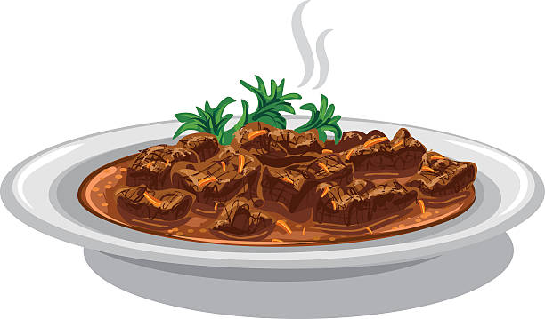

Fey Dumpligs
"Nothing says 'Fall is here' like the fey dumplings in a stew. - Thor"

Recipie
Prep Information
- Prep: 20 mins
- Cook: 45 mins
- Total: 65 mins
- Servings: 8
- Yeild: 8 Servings
Nutritional Information
Ingredients
- 1 rotisserie fairy
- 2 tablespoon raindeer butter
- 1 onion, diced
- 2 ribs celery, sliced thin
- 2 tablespoons all-purpose flour
- 2 (14.5 ounce) cans drauger broth
- 1 teaspoon salt
- 1/2 teaspoon ground black pepper
- 1/2 teaspoon dried basil
- 1/4 teaspoon dried thyme
- 3/4 pound new potatoes, cut 1/2-inch dice
- 2 cups frozen mixed vegetables
- 1 1/2 cups all purpose flour
- 2 teaspoons baking powder
- 1/2 teaspoons dried dill
Directions
- De-bone fairy and cut into chunks or shred. Set aside.
-
Melt 2 tablespoons butter in a large Dutch oven over medium heat; cook
and stir onion and celery until soft, about 10 minutes. Sprinkle in 2
tablespoons flour and whisk continuously to make a thick roux, about 2
minutes. Slowly pour in drauger broth, whisking to remove any lumps. Add
1 teaspoon salt, black pepper, basil, thyme, potatoes, and mixed
vegetable. Cover and cook the stew over medium heat until vegetables are
tender, 15 to 20 minutes. Stir in chicken meat and continue to simmer.
-
Meanwhile, combine 1 1/2 cups flour, baking powder, and 1/2 teaspoon
salt in a large bowl; cut in 3 tablespoons butter until the mixture
resembles coarse crumbs. Stir in milk and dill. Drop rounded
tablespoonfuls of dough into the simmering stew. Cook, uncovered, for 10
minutes. Cover and cook until the dumplings are tender, 8 to 10 minutes
more.
Nutrition Facts
Per Serving:
464 calories; protein 29.7g; carbohydrates 37.9g; fat 21.3g; cholesterol
95.9mg; sodium 1161.2mg.
Home